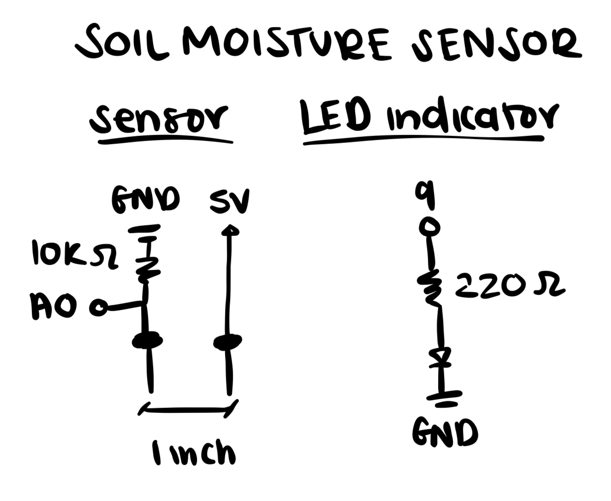
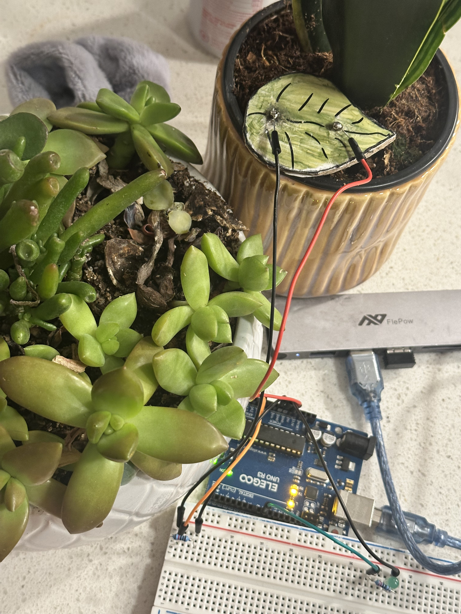

For my final project, I created a soil moisture monitoring system!
The idea was to create something to help remind me when to water my plants because I will sometimes go weeks without watering them...(oops).
I created a soil moisture sensor that is connected to an LED that turns on and a web interface interface that flashes green and sets off an alarm when the plant needs to be watered.
Once the plant has been sufficiently watered, a plant will grow on the screen.

My Arduino Board & Schematics


I included an LED to indicate when I should water my plant for fun, but the main component of my project is the web interface.
For the sensor, I used 2 nails and used cardboard to set them an inch apart, which is the optimal distance for soil moisture readings.
It’s set up in a voltage divider format with one prong/nail attached to 5V and the other attached to an analog pin then a 10k Ohm resistor and ground.
I had the most issues with soldering and having the metal stick to the nail – I tried sanding the surface down and trying flux (similar to glue), which both didn’t work, so my current prototype is not connected properly.
// p5.js sound reference: https://editor.p5js.org/p5/sketches/Sound:_Load_and_Play_Sound
// p5.js l-systems plant generation: https://www.youtube.com/redirect?event=video_description&redir_token=QUFFLUhqbDcxY1I5WGNNRkp4WU40X1FQUFo5NUtxNDFHZ3xBQ3Jtc0tsZ052amtCNllvU1dmRF9xMFNSenJvb1dPLUVLTkVmWk5PODgyMlpTUVpEbGV4RXhUWktHZl95NzQtbnV1TDBVZlZFd01NWXhtTDk0S2laOE5UVkhucHQxbVo2Rzd0dl82ZVhKMzFfWWRVTFlHMkNSVQ&q=https%3A%2F%2Feditor.p5js.org%2FBarneyCodes%2Fsketches%2F4y0dLXw6Z&v=TOPxa1xIG5Q
const BAUD_RATE = 9600;
let port, connectBtn, serial, inData; // Declare global variables
// establish rules for the L-system
const rules = {
// rules for x, which contains the list of options for how the branches can grow. Each option has a probability of being chosen, which allows for more natural variation in the growth patterns.
X: [
// Original rule
{ rule: "(F[+X][-X]FX)", prob: 0.5 },
// Fewer limbs
{ rule: "(F[-X]FX)", prob: 0.05 },
{ rule: "(F[+X]FX)", prob: 0.05 },
// Extra rotation
{ rule: "(F[++X][-X]FX)", prob: 0.1 },
{ rule: "(F[+X][--X]FX)", prob: 0.1 },
// Berries/fruits
{ rule: "(F[+X][-X]FXA)", prob: 0.1 },
{ rule: "(F[+X][-X]FXB)", prob: 0.1 }
],
F: [
// Original rule
{ rule: "F(F)", prob: 0.85 },
// Extra growth
{ rule: "F(FF)", prob: 0.05 },
// Stunted growth
{ rule: "F", prob: 0.1 },
],
"(": "",
")": ""
};
const len = 4;
const ang = 25;
let drawRules;
let word = "X";
const maxGeneration = 7;
let currGeneration = 2;
let growthPercent = 1;
const growthSpeed = 0.1;
let moistureLevel = 0;
let flashState = false;
let lastFlashTime = 0;
const FLASH_INTERVAL = 500; // ms between flashes
function setup() {
createCanvas(windowWidth, windowHeight);
alarm = loadSound('assets/alarm.mp3');
strokeWeight(2);
setupSerial(); // Run our serial setup function (below)
// how we'll draw each element of the L-system. The parameter t is a value between 0 and 1 that indicates how far along we are in drawing that element, which allows us to animate the growth of the tree.
drawRules = {
// added t parameter to allow for animation of growth (lerping)
"A": (t) => {
// draw circle at current location for berries/fruits
noStroke();
fill("#E5CEDC");
circle(0, 0, len*2 * t);
},
"B": (t) => {
// Draw circle at current location
noStroke();
fill("#FCA17D");
circle(0, 0, len*2 * t);
},
"F": (t) => {
// draw line forward, then move to end of line for stalk
stroke("#9ea93f");
line(0, 0, 0, -len * t);
// translating to the end of the line so that the next element will be drawn at the end of the current stalk, will create dashed effect if not included
translate(0, -len * t);
},
"+": (t) => {
// Rotate right
rotate(PI/180 * -ang * t);
},
"-": (t) => {
// Rotate right
rotate(PI/180 * ang * t);
},
// Save current location
"[": push,
// Restore last location
"]": pop,
};
}
function draw() {
readMoisture();
console.log("Moisture Level:", moistureLevel);
if (moistureLevel < 50) {
// Reset plant
word = "X";
currGeneration = 0;
growthPercent = 1;
if (millis() - lastFlashTime > FLASH_INTERVAL) {
flashState = !flashState;
lastFlashTime = millis();
alarm.play();
}
background(flashState ? color(0, 200, 80) : color(28));
return;
}
alarm.stop();
flashState = false; // reset flash state when moisture is sufficient
background(28);
if(growthPercent < 1) {
const mod = (currGeneration + growthPercent);
growthPercent += growthSpeed/mod;
} else {
nextGeneration();
}
drawLsysLerp(width/2, height, word, growthPercent);
}
function readMoisture() {
const portIsOpen = checkPort();
if (!portIsOpen) return;
let mp = port.readUntil("\n");
if (mp.length == 0) return;
console.log(mp);
let val = parseFloat(mp);
if (!isNaN(val)) {
moistureLevel = val; // Update global moisture level (expects 0–100 range)
}
}
// check if maxGeneration has been reached, if not, generate next generation and reset growthPercent
function nextGeneration() {
if(growthPercent < 1) {
return;
}
if(currGeneration >= maxGeneration) {
return;
}
word = generate(word);
currGeneration ++;
growthPercent = 0;
}
// generate the next generation of the L-system based on the rules
function generate(word) {
let next = ""
for(let i = 0; i < word.length; i ++) {
let c = word[i];
if(c in rules) {
let rule = rules[c];
// Check if we're using an array or not
if(Array.isArray(rule)) {
next += chooseOne(rule); // If we are, choose one of the options
} else {
next += rules[c]; // Otherwise use the rule directly
}
} else {
next += c;
}
}
return next;
}
function chooseOne(ruleSet) {
let n = random(); // Random number between 0-1
let t = 0;
for(let i = 0; i < ruleSet.length; i++) {
t += ruleSet[i].prob; // Keep adding the probability of the options to total
if(t > n) { // If the total is more than the random value
return ruleSet[i].rule; // Choose that option
}
}
return "";
}
function drawLsysLerp(x, y, state, t) {
t = constrain(t, 0, 1);
let lerpOn = false;
push();
translate(x, y);
for(let i = 0; i < state.length; i ++) {
let c = state[i];
if(c === "(") {
lerpOn = true;
continue;
}
if(c === ")") {
lerpOn = false;
continue;
}
let lerpT = t;
if(!lerpOn) {
lerpT = 1;
}
if(c in drawRules) {
drawRules[c](lerpT);
}
}
pop();
}
function setupSerial() {
port = createSerial();
// Check to see if there are any ports we have used previously
let usedPorts = usedSerialPorts();
if (usedPorts.length > 0) {
// If there are ports we've used, open the first one
port.open(usedPorts[0], BAUD_RATE);
}
connectBtn = createButton("Connect to Arduino");
connectBtn.position(5, 5); // Position the button in the top left of the screen.
connectBtn.mouseClicked(onConnectButtonClicked); // When the button is clicked, run the onConnectButtonClicked function
}
function checkPort() {
if (!port.opened()) {
// If the port is not open, change button text
connectBtn.html("Connect to Arduino");
// Set background to gray
background("black");
return false;
} else {
// Otherwise we are connected
connectBtn.html("Disconnect");
return true;
}
}
function onConnectButtonClicked() {
// When the connect button is clicked
if (!port.opened()) {
// If the port is not opened, we open it
port.open(BAUD_RATE);
} else {
// Otherwise, we close it!
port.close();
}
}